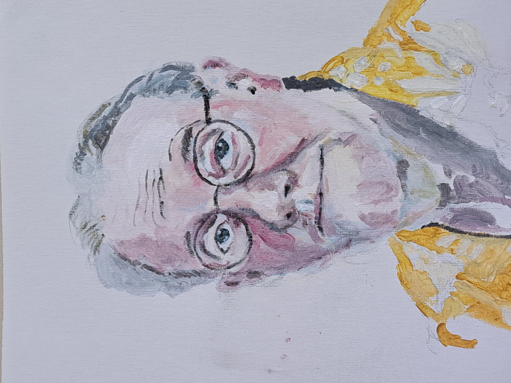
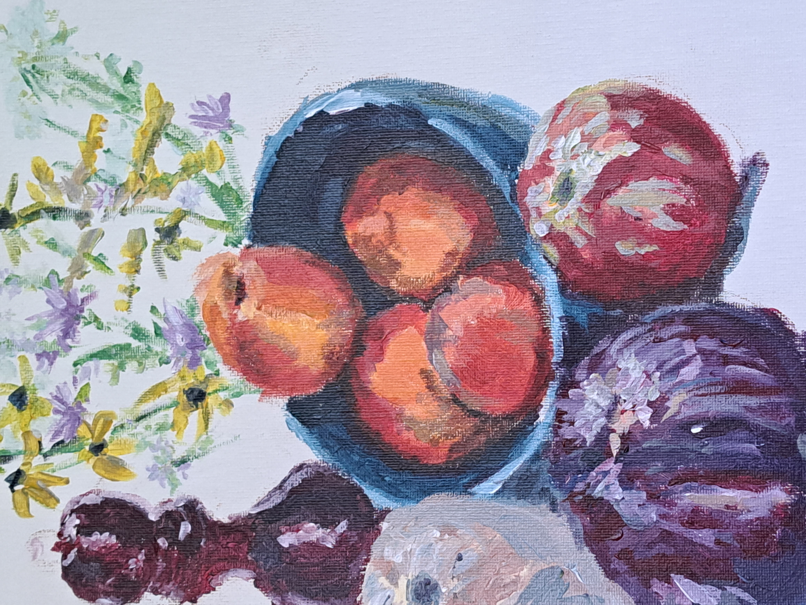

Now on Display: The Works of Bruce Eckersley

Self Portrait: The first self portrait by Bruce Eckersley

Bowl and Bottles: One of the first paintings in Bruce Eckersley's career

Flowers Display: A recent painting of flowers with a unique disaply

Peaches: Another early career painting of peaches on a table

Peaches and Onions: A display of peaches in a blue bowl with onions and flowers